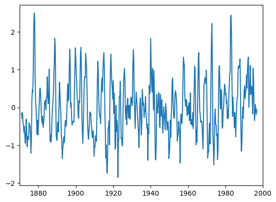
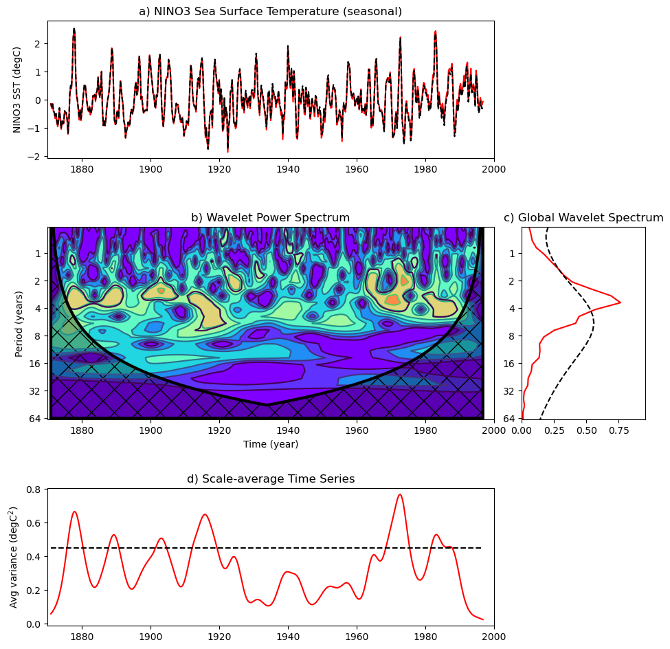

%load_ext autoreload
%autoreload 2This Jupyter notebook implements Dr. Toru Miyama’s Python code for univariate Wavelet analysis.
The following is inspired from his IPython notebook available at:
https://github.com/tmiyama/WaveletAnalysis/blob/main/wavelet_test_ElNino3_Liu.ipynb
See also:
https://github.com/tmiyama/WaveletAnalysis/blob/main/wavelet_test_sine.ipynb
References:
Liu, Y., X.S. Liang, and R.H. Weisberg, 2007: Rectification of the bias in the wavelet power spectrum. Journal of Atmospheric and Oceanic Technology, 24(12), 2093-2102. http://ocgweb.marine.usf.edu/~liu/wavelet.html
Torrence, C., and G. P. Compo, 1998: A practical guide to wavelet analysis. Bull. Amer. Meteor. Soc., 79, 61–78. http://paos.colorado.edu/research/wavelets/
imports
%matplotlib inline
import numpy as np
from matplotlib import pyplot as pltload the wavelib module
import syssys.path.append('.')from wavelib import *loads the data
data = np.loadtxt('./sst_nino3.dat')data.shape(504,)N = data.sizeset up some parameters
t0=1871
dt=0.25
units=r'^{\circ}C'
label='NINO3 SST'time = np.arange(0, N) * dt + t0plot the raw time-series
f, ax = plt.subplots()
ax.plot(time,data)
xlim = [1870,2000] # plotting range
ax.set_xlim(xlim)
calculate variance, mean and standardize the time-series
variance = np.std(data)**2
mean=np.mean(data)
data = (data - np.mean(data))/np.sqrt(variance)
print("mean=",mean)
print("std=", np.sqrt(variance))mean= -1.984126984127118e-05
std= 0.7335991128242201set wavelet parameters
pad = 1 # pad the time series with zeroes (recommended)
dj = 0.25 # this will do 4 sub-octaves per octave
s0 = 2.*dt # this says start at a scale of 6 months
j1 = 7./dj # this says do 7 powers-of-two with dj sub-octaves each
lag1 = 0.72 # lag-1 autocorrelation for red noise background
mother = 'Morlet'wavelet transform
wave,period,scale,coi = wavelet(data,dt,pad,dj,s0,j1,mother);
power = (np.abs(wave))**2 # compute wavelet power spectrumsignificance levels
signif,fft_theor = wave_signif(1.0,dt,scale,0,lag1,-1,-1,mother)sig95 = np.dot(signif.reshape(len(signif),1),np.ones((1,N))) # expand signif --> (J+1)x(N) arraysig95 = power / sig95 # where ratio > 1, power is significantglobal_ws = variance*power.sum(axis=1)/float(N) # time-average over all timesdof = N - scale # the -scale corrects for padding at edgesglobal_signif,fft_theor = wave_signif(variance,dt,scale,1,lag1,-1,dof,mother)scale-average between 2 and 8 years
avg = (scale >= 2) & (scale < 8)
Cdelta = 0.776; # this is for the MORLET wavelet
scale_avg = np.dot(scale.reshape(len(scale),1),np.ones((1,N))) # expand scale --> (J+1)x(N) array
scale_avg = power / scale_avg # [Eqn(24)]
scale_avg = variance*dj*dt/Cdelta*sum(scale_avg[avg,:]) # [Eqn(24)]
scaleavg_signif ,fft_theor= wave_signif(variance,dt,scale,2,lag1,-1,[2,7.9],mother)iwave=wavelet_inverse(wave, scale, dt, dj, "Morlet")
print("root square mean error",np.sqrt(np.sum((data-iwave)**2)/float(len(data)))*np.sqrt(variance),"deg C")root square mean error 0.07755811016771953 deg CBias rectification
divides by scales
########################
# Spectrum
########################
powers=np.zeros_like(power)
for k in range(len(scale)):
powers[k,:] = power[k,:]/scale[k]
#significance: sig95 is already normalized = 1
########################
# Spectrum
########################
global_wss = global_ws/scale
global_signifs=global_signif/scale
########################
# Scale-average between El Nino periods of 2--8 years
########################
# No need to change
# because in Eqn(24) of Torrence and Compo [1998], division by scale has been done.
scale_avgs=scale_avg
scaleavg_signifs=scaleavg_signif#figure size
fig=plt.figure(figsize=(10,10))
# subplot positions
width= 0.65
hight = 0.28;
pos1a = [0.1, 0.75, width, 0.2]
pos1b = [0.1, 0.37, width, hight]
pos1c = [0.79, 0.37, 0.18, hight]
pos1d = [0.1, 0.07, width, 0.2]
#########################################
#---- a) Original signal
#########################################
ax=fig.add_axes(pos1a)
#original
ax.plot(time,data*np.sqrt(variance)+mean,"r-")
#reconstruction
ax.plot(time,iwave*np.sqrt(variance)+mean,"k--")
ax.set_ylabel('NINO3 SST (degC)')
plt.title('a) NINO3 Sea Surface Temperature (seasonal)')
#########################################
# b) Wavelet spectrum
#########################################
#--- Contour plot wavelet power spectrum
bx=fig.add_axes(pos1b,sharex=ax)
levels = [0.0625,0.125,0.25,0.5,1,2,4,8,16]
Yticks = 2**(np.arange(int(np.log2(np.min(period))),int(np.log2(np.max(period)))+1))
bx.contour(time,np.log2(period),np.log2(powers),np.log2(levels))
bx.contourf(time,np.log2(period),np.log2(powers),np.log2(levels), extend='both', cmap=plt.get_cmap('rainbow'))
bx.set_xlabel('Time (year)')
bx.set_ylabel('Period (years)')
import matplotlib.ticker as ticker
ymajorLocator=ticker.FixedLocator(np.log2(Yticks))
bx.yaxis.set_major_locator( ymajorLocator )
ticks=bx.yaxis.set_ticklabels(Yticks)
plt.title('b) Wavelet Power Spectrum')
# 95% significance contour, levels at -99 (fake) and 1 (95% signif)
cs = bx.contour(time,np.log2(period),sig95,[1])
# cone-of-influence, anything "below" is dubious
ts = time;
coi_area = np.concatenate([[np.max(scale)], coi, [np.max(scale)],[np.max(scale)]])
ts_area = np.concatenate([[ts[0]], ts, [ts[-1]] ,[ts[0]]]);
L = bx.plot(ts_area,np.log2(coi_area),'k',linewidth=3)
F=bx.fill(ts_area,np.log2(coi_area),'k',alpha=0.3,hatch="x")
#########################################
# c) Global Wavelet spectrum
#########################################
#--- Plot global wavelet spectrum
cx=fig.add_axes(pos1c,sharey=bx)
cx.plot(global_wss,np.log2(period),"r-")
cx.plot(global_signifs,np.log2(period),'k--')
ylim=cx.set_ylim(np.log2([period.min(),period.max()]))
cx.invert_yaxis()
plt.title('c) Global Wavelet Spectrum')
xrangec=cx.set_xlim([0,1.25*np.max(global_wss)])
#########################################
# d) Global Wavelet spectrum
#########################################
#--- Plot Scale-averaged spectrum -----------------
dx=fig.add_axes(pos1d,sharex=bx)
dx.plot(time,scale_avgs,"r-")
dx.plot([time[0],time[-1]],[scaleavg_signifs,scaleavg_signifs],"k--")
xrange=dx.set_xlim(xlim)
dx.set_ylabel('Avg variance (degC$^2$)')
title=plt.title('d) Scale-average Time Series')

!cat ./wavelib.py# wavelet library
def wavelet(Y,dt,pad=0.,dj=0.25,s0=-1,J1=-1,mother="MORLET",param=-1):
"""
This function is the translation of wavelet.m by Torrence and Compo
import wave_bases from wave_bases.py
The following is the original comment in wavelet.m
#WAVELET 1D Wavelet transform with optional singificance testing
%
% [WAVE,PERIOD,SCALE,COI] = wavelet(Y,DT,PAD,DJ,S0,J1,MOTHER,PARAM)
%
% Computes the wavelet transform of the vector Y (length N),
% with sampling rate DT.
%
% By default, the Morlet wavelet (k0=6) is used.
% The wavelet basis is normalized to have total energy=1 at all scales.
%
%
% INPUTS:
%
% Y = the time series of length N.
% DT = amount of time between each Y value, i.e. the sampling time.
%
% OUTPUTS:
%
% WAVE is the WAVELET transform of Y. This is a complex array
% of dimensions (N,J1+1). FLOAT(WAVE) gives the WAVELET amplitude,
% ATAN(IMAGINARY(WAVE),FLOAT(WAVE) gives the WAVELET phase.
% The WAVELET power spectrum is ABS(WAVE)^2.
% Its units are sigma^2 (the time series variance).
%
%
% OPTIONAL INPUTS:
%
% *** Note *** setting any of the following to -1 will cause the default
% value to be used.
%
% PAD = if set to 1 (default is 0), pad time series with enough zeroes to get
% N up to the next higher power of 2. This prevents wraparound
% from the end of the time series to the beginning, and also
% speeds up the FFT's used to do the wavelet transform.
% This will not eliminate all edge effects (see COI below).
%
% DJ = the spacing between discrete scales. Default is 0.25.
% A smaller # will give better scale resolution, but be slower to plot.
%
% S0 = the smallest scale of the wavelet. Default is 2*DT.
%
% J1 = the # of scales minus one. Scales range from S0 up to S0*2^(J1*DJ),
% to give a total of (J1+1) scales. Default is J1 = (LOG2(N DT/S0))/DJ.
%
% MOTHER = the mother wavelet function.
% The choices are 'MORLET', 'PAUL', or 'DOG'
%
% PARAM = the mother wavelet parameter.
% For 'MORLET' this is k0 (wavenumber), default is 6.
% For 'PAUL' this is m (order), default is 4.
% For 'DOG' this is m (m-th derivative), default is 2.
%
%
% OPTIONAL OUTPUTS:
%
% PERIOD = the vector of "Fourier" periods (in time units) that corresponds
% to the SCALEs.
%
% SCALE = the vector of scale indices, given by S0*2^(j*DJ), j=0...J1
% where J1+1 is the total # of scales.
%
% COI = if specified, then return the Cone-of-Influence, which is a vector
% of N points that contains the maximum period of useful information
% at that particular time.
% Periods greater than this are subject to edge effects.
% This can be used to plot COI lines on a contour plot by doing:
%
% contour(time,log(period),log(power))
% plot(time,log(coi),'k')
%
%----------------------------------------------------------------------------
% Copyright (C) 1995-2004, Christopher Torrence and Gilbert P. Compo
%
% This software may be used, copied, or redistributed as long as it is not
% sold and this copyright notice is reproduced on each copy made. This
% routine is provided as is without any express or implied warranties
% whatsoever.
%
% Notice: Please acknowledge the use of the above software in any publications:
% ``Wavelet software was provided by C. Torrence and G. Compo,
% and is available at URL: http://paos.colorado.edu/research/wavelets/''.
%
% Reference: Torrence, C. and G. P. Compo, 1998: A Practical Guide to
% Wavelet Analysis. <I>Bull. Amer. Meteor. Soc.</I>, 79, 61-78.
%
% Please send a copy of such publications to either C. Torrence or G. Compo:
% Dr. Christopher Torrence Dr. Gilbert P. Compo
% Research Systems, Inc. Climate Diagnostics Center
% 4990 Pearl East Circle 325 Broadway R/CDC1
% Boulder, CO 80301, USA Boulder, CO 80305-3328, USA
% E-mail: chris[AT]rsinc[DOT]com E-mail: compo[AT]colorado[DOT]edu
%----------------------------------------------------------------------------"""
#modules
import numpy as np
#set default
n1 = len(Y)
if (s0 == -1): s0=2.*dt
if (dj == -1): dj = 1./4.
if (J1 == -1): J1=np.fix((np.log(n1*dt/s0)/np.log(2))/dj)
if (mother == -1): mother = 'MORLET'
#print "s0=",s0
#print "J1=",J1
#....construct time series to analyze, pad if necessary
x = Y - np.mean(Y);
if (pad == 1):
base2 = np.fix(np.log(n1)/np.log(2) + 0.4999) # power of 2 nearest to N
temp=np.zeros((int(2**(base2+1)-n1),))
x=np.concatenate((x,temp))
n = len(x)
#....construct wavenumber array used in transform [Eqn(5)]
k = np.arange(1,np.fix(n/2)+1)
k = k*(2.*np.pi)/(n*dt)
k = np.concatenate((np.zeros((1,)),k, -k[-2::-1]));
#....compute FFT of the (padded) time series
f = np.fft.fft(x) # [Eqn(3)]
#....construct SCALE array & empty PERIOD & WAVE arrays
scale=np.array([s0*2**(i*dj) for i in range(0,int(J1)+1)])
period = scale.copy()
wave = np.zeros((int(J1)+1,n),dtype=complex) # define the wavelet array # make it complex
# loop through all scales and compute transform
for a1 in range(0,int(J1)+1):
daughter,fourier_factor,coi,dofmin=wave_bases(mother,k,scale[a1],param)
wave[a1,:] = np.fft.ifft(f*daughter) # wavelet transform[Eqn(4)]
period = fourier_factor*scale
coi=coi*dt*np.concatenate(([1.E-5],np.arange(1.,(n1+1.)/2.-1),np.flipud(np.arange(1,n1/2.)),[1.E-5])) # COI [Sec.3g]
wave = wave[:,:n1] # get rid of padding before returning
return wave,period,scale,coi
# end of code
def wave_bases(mother,k,scale,param):
"""
This is translation of wave_bases.m by Torrence and Gilbert P. Compo
The folloing is the original README
% WAVE_BASES 1D Wavelet functions Morlet, Paul, or DOG
%
% [DAUGHTER,FOURIER_FACTOR,COI,DOFMIN] = ...
% wave_bases(MOTHER,K,SCALE,PARAM);
%
% Computes the wavelet function as a function of Fourier frequency,
% used for the wavelet transform in Fourier space.
% (This program is called automatically by WAVELET)
%
% INPUTS:
%
% MOTHER = a string, equal to 'MORLET' or 'PAUL' or 'DOG'
% K = a vector, the Fourier frequencies at which to calculate the wavelet
% SCALE = a number, the wavelet scale
% PARAM = the nondimensional parameter for the wavelet function
%
% OUTPUTS:
%
% DAUGHTER = a vector, the wavelet function
% FOURIER_FACTOR = the ratio of Fourier period to scale
% COI = a number, the cone-of-influence size at the scale
% DOFMIN = a number, degrees of freedom for each point in the wavelet power
% (either 2 for Morlet and Paul, or 1 for the DOG)
%
%----------------------------------------------------------------------------
% Copyright (C) 1995-1998, Christopher Torrence and Gilbert P. Compo
% University of Colorado, Program in Atmospheric and Oceanic Sciences.
% This software may be used, copied, or redistributed as long as it is not
% sold and this copyright notice is reproduced on each copy made. This
% routine is provided as is without any express or implied warranties
% whatsoever.
%----------------------------------------------------------------------------
"""
#import modules
import numpy as np
#
mother = mother.upper()
n = len(k)
# define Heaviside step function
def ksign(x):
y=np.zeros_like(x)
y[x>0]=1
return y
#
if mother=='MORLET': #----------------------------------- Morlet
if (param == -1): param = 6.
k0 = param
expnt = -(scale*k - k0)**2/2. *ksign(k)
norm = np.sqrt(scale*k[1])*(np.pi**(-0.25))*np.sqrt(n) # total energy=N [Eqn(7)]
daughter = norm*np.exp(expnt)
daughter = daughter*ksign(k) # Heaviside step function
fourier_factor = (4.*np.pi)/(k0 + np.sqrt(2. + k0**2)) # Scale-->Fourier [Sec.3h]
coi = fourier_factor/np.sqrt(2) # Cone-of-influence [Sec.3g]
dofmin = 2. # Degrees of freedom
elif mother=='PAUL': #-------------------------------- Paul
if (param == -1): param = 4.
m = param
expnt = -(scale*k)*ksign(k)
norm = np.sqrt(scale*k[1])*(2.**m/np.sqrt(m*np.prod(np.arange(2,2*m))))*np.sqrt(n)
daughter = norm*((scale*k)**m)*np.exp(expnt)
daughter = daughter*ksign(k) # Heaviside step function
fourier_factor = 4*np.pi/(2.*m+1.)
coi = fourier_factor*np.sqrt(2)
dofmin = 2.
elif mother=='DOG': #-------------------------------- DOG
if (param == -1): param = 2.
m = param
expnt = -(scale*k)**2 / 2.0
from scipy.special import gamma
norm = np.sqrt(scale*k[1]/gamma(m+0.5))*np.sqrt(n)
daughter = -norm*(1j**m)*((scale*k)**m)*np.exp(expnt);
fourier_factor = 2.*np.pi*np.sqrt(2./(2.*m+1.))
coi = fourier_factor/np.sqrt(2)
dofmin = 1.
else:
raise Exception("Mother must be one of MORLET,PAUL,DOG")
return daughter,fourier_factor,coi,dofmin
# end of code
def wave_signif(Y,dt,scale1,sigtest=-1,lag1=-1,siglvl=-1,dof=-1,mother=-1,param=-1):
"""
This function is the translation of wave_signif.m by Torrence and Compo
use scipy function "chi2" instead of chisquare_inv
The following is the original comment in wave_signif.m
%WAVE_SIGNIF Significance testing for the 1D Wavelet transform WAVELET
%
% [SIGNIF,FFT_THEOR] = ...
% wave_signif(Y,DT,SCALE,SIGTEST,LAG1,SIGLVL,DOF,MOTHER,PARAM)
%
% INPUTS:
%
% Y = the time series, or, the VARIANCE of the time series.
% (If this is a single number, it is assumed to be the variance...)
% DT = amount of time between each Y value, i.e. the sampling time.
% SCALE = the vector of scale indices, from previous call to WAVELET.
%
%
% OUTPUTS:
%
% SIGNIF = significance levels as a function of SCALE
% FFT_THEOR = output theoretical red-noise spectrum as fn of PERIOD
%
%
% OPTIONAL INPUTS:
% *** Note *** setting any of the following to -1 will cause the default
% value to be used.
%
% SIGTEST = 0, 1, or 2. If omitted, then assume 0.
%
% If 0 (the default), then just do a regular chi-square test,
% i.e. Eqn (18) from Torrence & Compo.
% If 1, then do a "time-average" test, i.e. Eqn (23).
% In this case, DOF should be set to NA, the number
% of local wavelet spectra that were averaged together.
% For the Global Wavelet Spectrum, this would be NA=N,
% where N is the number of points in your time series.
% If 2, then do a "scale-average" test, i.e. Eqns (25)-(28).
% In this case, DOF should be set to a
% two-element vector [S1,S2], which gives the scale
% range that was averaged together.
% e.g. if one scale-averaged scales between 2 and 8,
% then DOF=[2,8].
%
% LAG1 = LAG 1 Autocorrelation, used for SIGNIF levels. Default is 0.0
%
% SIGLVL = significance level to use. Default is 0.95
%
% DOF = degrees-of-freedom for signif test.
% IF SIGTEST=0, then (automatically) DOF = 2 (or 1 for MOTHER='DOG')
% IF SIGTEST=1, then DOF = NA, the number of times averaged together.
% IF SIGTEST=2, then DOF = [S1,S2], the range of scales averaged.
%
% Note: IF SIGTEST=1, then DOF can be a vector (same length as SCALEs),
% in which case NA is assumed to vary with SCALE.
% This allows one to average different numbers of times
% together at different scales, or to take into account
% things like the Cone of Influence.
% See discussion following Eqn (23) in Torrence & Compo.
%
%
%----------------------------------------------------------------------------
% Copyright (C) 1995-1998, Christopher Torrence and Gilbert P. Compo
% University of Colorado, Program in Atmospheric and Oceanic Sciences.
% This software may be used, copied, or redistributed as long as it is not
% sold and this copyright notice is reproduced on each copy made. This
% routine is provided as is without any express or implied warranties
% whatsoever.
%----------------------------------------------------------------------------
"""
from scipy.stats import chi2
import numpy as np
try:
n1=len(Y)
except:
n1=1
J1 = len(scale1) - 1
scale = scale1
s0 = np.min(scale)
dj = np.log(scale[1]/scale[0])/np.log(2.)
if (n1 == 1):
variance = Y
else:
variance = np.std(Y)**2
if (sigtest == -1): sigtest = 0
if (lag1 == -1): lag1 = 0.0
if (siglvl == -1): siglvl = 0.95
if (mother == -1): mother = 'MORLET'
mother = mother.upper()
# get the appropriate parameters [see Table(2)]
if (mother=='MORLET'): #---------------------------------- Morlet
if (param == -1): param = 6.
k0 = param
fourier_factor = (4.*np.pi)/(k0 + np.sqrt(2. + k0**2)) # Scale-->Fourier [Sec.3h]
empir = [2.,-1,-1,-1]
if (k0 == 6): empir[1:4]=[0.776,2.32,0.60]
elif (mother=='PAUL'): #-------------------------------- Paul
if (param == -1): param = 4.
m = param
fourier_factor = 4.*np.pi/(2.*m+1.)
empir = [2.,-1,-1,-1]
if (m == 4): empir[1:4]=[1.132,1.17,1.5]
elif (mother=='DOG'): #--------------------------------- DOG
if (param == -1): param = 2.
m = param
fourier_factor = 2.*np.pi*np.sqrt(2./(2.*m+1.))
empir = [1.,-1,-1,-1]
if (m == 2): empir[1:4] = [3.541,1.43,1.4]
if (m == 6): empir[1:4] = [1.966,1.37,0.97]
else:
raise Exception("Mother must be one of MORLET,PAUL,DOG")
period = scale*fourier_factor
dofmin = empir[0] # Degrees of freedom with no smoothing
Cdelta = empir[1] # reconstruction factor
gamma_fac = empir[2] # time-decorrelation factor
dj0 = empir[3] # scale-decorrelation factor
freq = dt / period # normalized frequency
fft_theor = (1.-lag1**2) / (1.-2.*lag1*np.cos(freq*2.*np.pi)+lag1**2) # [Eqn(16)]
fft_theor = variance*fft_theor # include time-series variance
signif = fft_theor
try:
test=len(dof)
except:
if (dof == -1):
dof = dofmin
else:
pass
#
if (sigtest == 0): # no smoothing, DOF=dofmin [Sec.4]
dof = dofmin
chisquare = chi2.ppf(siglvl,dof)/dof
signif = fft_theor*chisquare # [Eqn(18)]
elif (sigtest == 1): # time-averaged significance
try:
test=len(dof)
except:
dof=np.zeros((J1+1,))+dof
truncate = dof < 1
dof[truncate] = 1.
dof = dofmin*np.sqrt(1. + (dof*dt/gamma_fac / scale)**2 ) # [Eqn(23)]
truncate = dof < dofmin
dof[truncate] = dofmin # minimum DOF is dofmin
for a1 in range(J1+1):
chisquare = chi2.ppf(siglvl,dof[a1])/dof[a1]
signif[a1] = fft_theor[a1]*chisquare
elif (sigtest == 2): # time-averaged significance
if not (len(dof) == 2):
raise Exception("DOF must be set to [S1,S2], the range of scale-averages'")
if (Cdelta == -1):
raise Exception('Cdelta & dj0 not defined for '+mother+' with param = '+str(param))
s1 = dof[0];
s2 = dof[1];
avg = (scale >= s1) & (scale <= s2) # scales between S1 & S2
navg=np.sum(avg)
if navg==0:
raise Exception('No valid scales between '+str(s1)+' and '+str(s2))
Savg = 1./np.sum(1 / scale[avg]) # [Eqn(25)]
Smid = np.exp((np.log(s1)+np.log(s2))/2.) # power-of-two midpoint
dof = (dofmin*navg*Savg/Smid)*np.sqrt(1. + (navg*dj/dj0)**2) # [Eqn(28)]
fft_theor = Savg*np.sum(fft_theor[avg] / scale[avg]) # [Eqn(27)]#
chisquare = chi2.ppf(siglvl,dof)/dof
signif = (dj*dt/Cdelta/Savg)*fft_theor*chisquare # [Eqn(26)]
else:
raise Exception('sigtest must be either 0, 1, or 2')
return signif,fft_theor
# end of code
def wavelet_inverse(wave, scale, dt, dj=0.25, mother="MORLET",param=-1):
"""Inverse continuous wavelet transform
Torrence and Compo (1998), eq. (11)
INPUTS
waves (array like):
WAVE is the WAVELET transform. This is a complex array.
scale (array like):
the vector of scale indices
dt (float) :
amount of time between each original value, i.e. the sampling time.
dj (float, optional) :
the spacing between discrete scales. Default is 0.25.
A smaller # will give better scale resolution, but be slower to plot.
mother (string, optional) :
the mother wavelet function.
The choices are 'MORLET', 'PAUL', or 'DOG'
PARAM = the mother wavelet parameter.
For 'MORLET' this is k0 (wavenumber), default is 6.
For 'PAUL' this is m (order), default is 4.
For 'DOG' this is m (m-th derivative), default is 2.
OUTPUTS
iwave (array like) :
Inverse wavelet transform.
"""
import numpy as np
j1, n = wave.shape
J1 = len(scale)
if not j1 == J1:
print(j1,n,J1)
raise Exception("Input array are inconsistent")
sj = np.dot(scale.reshape(len(scale),1),np.ones((1,n)))
#
mother = mother.upper()
# psi0 comes from Table 1,2 Torrence and Compo (1998)
# Cdelta comes from Table 2 Torrence and Compo (1998)
if mother=='MORLET': #----------------------------------- Morlet
if (param == -1): param = 6.
psi0=np.pi**(-0.25)
if param==6.:
Cdelta = 0.776
elif mother=='PAUL': #-------------------------------- Paul
if (param == -1): param = 4.
m = param
psi0=np.real(2.**m*1j**m*np.prod(np.arange(2, m + 1))/np.sqrt(np.pi*np.prod(np.arange(2,2*m+1)))*(1**(-(m+1))))
if m==4.:
Cdelta = 1.132
elif mother=='DOG': #-------------------------------- DOG
if (param == -1): param = 2.
m = param
from scipy.special import gamma
from numpy.lib.polynomial import polyval
from scipy.special.orthogonal import hermitenorm
p = hermitenorm(m)
psi0=(-1)**(m+1)/np.sqrt(gamma(m+0.5))*polyval(p, 0)
print(psi0)
if m==2.:
Cdelta=3.541
if m==6.:
Cdelta=1.966
else:
raise Exception("Mother must be one of MORLET,PAUL,DOG")
#eq. (11) in Torrence and Compo (1998)
iwave = dj * np.sqrt(dt) / Cdelta /psi0 * (np.real(wave) / sj**0.5).sum(axis=0)
return iwave